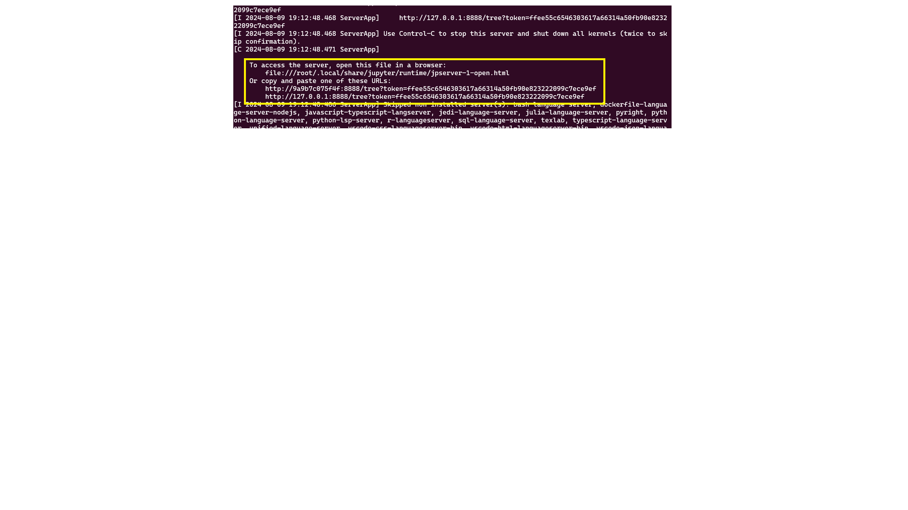
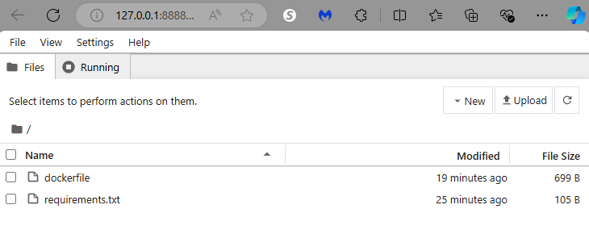

Set up development computer with Docker, Jupyter
This article assumes you are using python to start a generic Jupyter notebook and then loading the requirements using requirements.txt file.
We recommend using conda as base and adding your dependencies using environment.yml. The conda packaging provides a better dependency than using pip.
| The first two bullet points of conda are really what make it advantageous over pip for many packages. Since pip installs from source, it can be painful to install things with it if you are unable to compile the source code (this is especially true on Windows, but it can even be true on Linux if the packages have some difficult C or FORTRAN library dependencies). conda installs from binary, meaning that someone (e.g., Continuum) has already done the hard work of compiling the package, and so the installation is easy.
Prerequisites
You will need:
- Docker installed
- Visual Studio Code installed
- WSL terminal
If you want to run a GPU on your notebook, you will need the GPU drivers installed.
Project setup
Start WSL and then create a directory where you want to put the project.
cd ~
mkdir dockerproject
cd dockerproject
code .
Create a readme.md for your project.
Test Docker
Start Docker
sudo service docker start
Then try:
docker run hello-world
If you see
docker: permission denied while trying to connect to the Docker daemon socket at unix:///var/run/docker.sock: Head "http://%2Fvar%2Frun%2Fdocker.sock/_ping": dial unix /var/run/docker.sock: connect: permission denied.
See 'docker run --help'.
Set up your user:
# Create the docker group if it does not exist
sudo groupadd docker
# Add your user to the docker group.
sudo usermod -aG docker $USER
# Log in to the new docker group (to avoid having to log out / log in again;
# but if not enough, try to reboot)
newgrp docker
# Check docker again
docker run hello-world
If you still get an error, reboot:
reboot
Create the dockerfile
Start code . and open Visual Studio Code.
In the project directory, create a file named dockerfile with the following content:
# Use an official Python runtime as a parent image
FROM python:3.8
# Set the working directory to /app
WORKDIR /app
# Install Jupyter Notebook
RUN pip install jupyter
# Make port 8888 available to the world outside this container
EXPOSE 8888
# Define environment variable
ENV NAME World
# Run Jupyter Notebook when the container launches
CMD ["jupyter", "notebook", "--ip=0.0.0.0", "--port=8888", "--no-browser", "--allow-root"]
Create a requirements.txt file (as needed)
Use Visual Studio Code to create a file named requirements.txt listing them.
For example:
numpy==1.25.2
pandas==1.5.3
matplotlib==3.7.1
seaborn==0.13.1
scikit-learn==1.2.2
sklearn-pandas==2.2.0
matplotlib
Then you can add the following code to your dockerfile to run the requirements.
# Set the working directory to /app
WORKDIR /app
# Copy the current directory contents into the container at /app
COPY . /app
# Install any needed packages specified in requirements.txt
RUN pip install --no-cache-dir -r requirements.txt
Build Docker image
Open a terminal, navigate to the project directory, and run the following command to build the Docker image:
docker build -t my-jupyter .
Run the Docker container
Once the image is built, run the command to run the container.
docker run -p 8888:8888 my-jupyter
Click on the https://127.0.0.1:8888 link. It has the code to log into Jupyter notebook

Create your notebook on your local computer
You are logged into the notebook from the startup directory on your development computer.

Run the container with environment variables
In many cases, you may want to pass in a token or API key when running the notebook. First set up the variables and export. Then you can start the container:
docker run -p 8888:8888 -e MUSICPREFERENCE='rockandroll' my-jupyter
Inside the notebook, to see the environment variable, run:
!TODO
Tips
- If your project has specific Python packages, list them in the
requirements.txtfile. - Customize the Dockerfile based on your project requirements.
- Ensure Docker is running and the Docker daemon is accessible.
- If port 8888 is unavailable, choose a different port in the
docker runcommand (e.g.,-p 8889:8888).
Summary of Docker commands
Summary of Docker commands:
docker build -t <my-image-name>to build the Docker Imagedocker run -d --name <my-container-name> <my-image-name>to build the Docker Containerdocker imagesto display the list of created imagesdocker ps -ato show the list of containersdocker rmi <my-image-id>to remove an imagedocker stop <my-container-id>to stop a running containerdocker rm <my-container-id>to remove a stopped container
Reference
See: